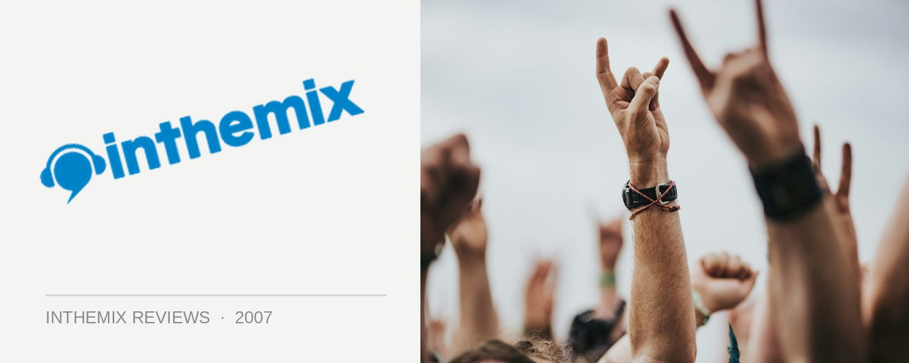

Beck's Festival Bar pres. Dust Tones @ Hyde Park Barracks, Sydney (12/01/07)
After all the crazyness of the New Year festivities, I had a sinking feeling in my stomach that the fun was all over – that summer had already come and gone. Of course this couldn’t be further from the truth, with the likes of Field Day only serving as an appetizer for the wide assortment of summer parties that are to come. The Becks Festival Bar makes for the perfect way to warm up for it all, taking over the Hyde Park Barracks every January as part of the Sydney Festival. This year playing host to an impressive lineup of acts that includes the likes of Crazy Penis, Ugly Duckling and Shapeshifter, on Friday night I was there to relive my own Festival Bar experience two years ago featuring the party hip-hop DJ duo The Nextmen. A rockin’ night it was back in the early days of ‘05, and I had my heart set on replicating it.
This time the Nextmen were being featured as part of the Dust Tones event – a troupe of hip hop, funk and soul that also featured the visiting US act All Good Group Funk Alliance (AGFA) and a special live performance from local heroes Astonomy Class. Upon arrival Mark Walton was behind the decks with former ‘Wiseguy’ Regal, who along with MC Morganics was warming up the crowd with a smooth selection of hip hop. The atmosphere was as laidback as the beats and it gave me a chance to get reacquainted with the venue. It’s simply the best place to sink a few (Becks’ branded) beers on a balmy summer evening. Smack in the middle of the city on Macquarie Street, an elongated tent is set up to house the rockin’ punters with the DJ booth right up the front. But a majority of the space is open air – giving you plenty of room to crunch the gravel underfoot, take a seat for a while or simply feel against your skin the lovely breeze that was blowing around on Friday night.
Next up was AGFA, laying down a sound similar to the group’s own concoction of hip hop and breaks – coloured heavily by all the live instrumentation of funk and soul. A number of their own tracks got an airing naturally, as well as a few fairly random inclusions from the likes of Justin Timberlake – which seemed to have a few of the more discerning punters a little confused. But again it was a funky and laidback soundtrack to an evening that was just about as cruisy as you can get.
By the time the Astronomy Class posse hit the stage, the Barracks had well and truly filled up with people – but never to the point where it made it difficult to move around. There were plenty of attractive members of the opposite sex to have a perve on, but with a level of class you don’t really see among the short-shorts, cowboy hats and steroid abuse of the summer festivals. Astronomy Class features Sir Robbo and Chasm on production and Ozi Batla on MC duties. As he took to the mic he pronounced that tonight was, “One of the few events of the Sydney Festival that you can all actually afford,” and indeed the night had a wonderfully inclusive and down-to-earth feel about it – a truly diverse range of peeps had rocked up to have a good time. Astronomy Class continued the eclectic feel of the evening with a mixture of dub, reggae, hip hop and soul sounds and the live flavour of the group went down a treat.
At just around 11:30 it was time for the act that I had come to see – the all-drinking, all-smoking and all-scratchin’ UK DJs that are the Nextmen. Consisting of the thin Brad and the fat Dom, the boys have their roots in an upbeat style of party hip hop and breaks but they bring into the mix a whole assortment of other influences like drum n’ bass, soul, reggae grime, hits from years gone by and just about everything else that works. They’re not quite on the same mash-up level as the likes of Z-Trip, but they’re someone not too far away. While their performance at the Barracks two years ago (as well as the recent Field Day) was a lot more grounded in hip hop and breaks, this time it just as eclectic as the rest of the music heard that evening – everything was thrown in there from Cypress Hill, Young MC, Public Enemy, Roni Size and a bunch of reggae and soul tunes – all mashed up with the ‘big’ tracks from the likes of Suzie Quatro, INXS, David Bowie and whatever else. Needless to say, it got the hands in the air.
The only interruption came when some shirtless munter decided to climb up front and stagedive into the crowd – knocking the decks in the process and brining the scratch-heavy performance of the Nextmen to a screeching halt. A loud ‘boo’ erupted in the crowd but the music didn’t stop for long, and the general vibe was just about as happy as can be. With much joyous dancing being amongst those in the audience I thought to myself that it doesn’t get much better than this.
But the performance was all too brief and just before 1am, Kid Kenobi & MC Sureshock jumped onstage to end the night’s proceedings with more of an upbeat flavour. Kicking off with a pumping selection of breaks, it’s easy to see why the Kid continues to be one of Australia’s most popular DJs. Sureshock was eschewing his typical macho ramblings we usually get at the big festivals to deliver a more dubby, laidback vocal soundtrack – pointing to the fact that he’s actually a very accomplished performer with a lot of vocal range. But due to a few many (Becks branded) beers consumed over the course of the evening, by the time Kid Kenobi was laying down more of a techy 4/4 sound it was time for me to hit the road. The corporate signage may have been a little in your face during the evening, but it’s a small price to pay to enjoy such an excellent party in such a great location for less than $30. As I left I had my fingers crossed that the Festival Bar was still gonna be there next year to help me keep my summer kicking along.